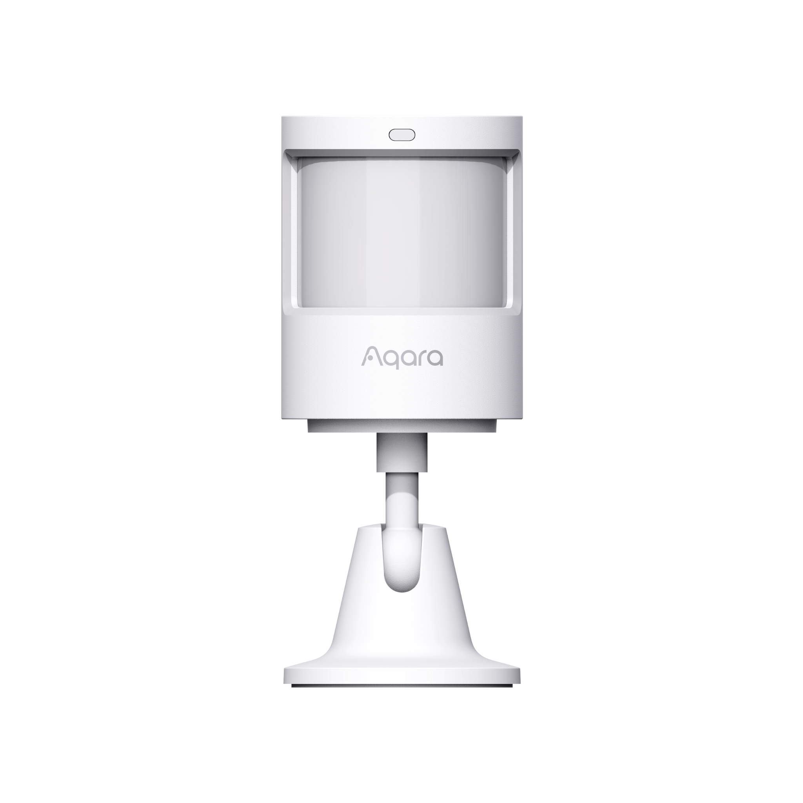

Door & Window Sensor P2
- Aqara Door & Window Sensor P2 offers Matter support, real-time alerts, local automations, voice assistant control, and long-lasting battery for smart homes.
Future-Proofing via OTA |
Local and Remote Alarm |
Long Battery Life |
Tamper Alarm |
1-3cm Adjustable Sensitivity |


Product Info
Description
The Aqara Door and Window Sensor P2 is a compact, wireless sensor designed to monitor the status of doors, windows, and other openings in real-time. It operates on the Thread protocol, enabling seamless integration with Matter-compatible smart home ecosystems and enhancing connectivity for faster, more stable communication. With high-precision sensors, it detects changes in the open or closed status of doors or windows, triggering alerts or automations as set by the user.
Powered by a replaceable CR2032 battery, it offers long-lasting operation and can be easily installed with adhesive backing, making it an efficient and versatile option for security and smart home automation.
Key Features
- Matter-Ready Compatibility: Embrace the Matter standard with ease—no need to worry about different platforms or protocols. Just use a Matter app and a compatible Thread Border Router for seamless cross-ecosystem connections.
- Real-Time Open/Close Monitoring: Get instant smartphone notifications for any door or window activity, keeping you informed and secure, whether you're at home or on the go.
- Local Automation for Privacy and Reliability: Integrate the Door and Window Sensor P2 into your smart home to enable automations like thermostat adjustments or security camera activation. With local execution, these automations protect your privacy and continue working even without internet access.
- Enhanced Voice Assistant Compatibility: The Aqara Door and Window Sensor P2 supports Apple Siri and Alexa, enabling you to receive entry alerts and check door status by voice, keeping home management hands-free and efficient.
- Quick Setup & Low Maintenance: Its compact, adhesive design allows for easy placement in various locations. Powered by a long-lasting CR123A battery, the sensor minimizes maintenance needs.
- Expanded Features with Aqara Home App: With the Aqara Home app and the upcoming Hub M3, users can fine-tune sensitivity, set custom sleep times, use a programmable button for automations, and receive instant Tamper Alarm alerts in case of sensor tampering
Note:
* To use the Door and Window Sensor P2 with a particular ecosystem, a compatible Thread Border Router and/or Matter controller are required.
** The battery life may vary depending on the border router and Matter app the sensor is connected to. For best results, Aqara border router is advised.
***To support Matter over Thread devices in Aqara Home app, the Hub M3 is required.
Specifications
| Model | DW-S02D |
| Colour | White |
| Wireless Protocols | Thread, BLE 5.0 |
| Bluetooth Operation Frequency | 2402-2480 MHz |
| Bluetooth Maximum Output Power | ≤ 13 dBm |
| Thread Operation Frequency | 2405-2480 MHz |
| Thread Maximum Output Power | ≤ 13 dBm |
| Dimensions | 77 × 22 × 22 mm (Sensor Main Unit) 36 × 11.5 × 7.3 mm (Sensor Accessory Unit) |
| Operating Temperature | -10 °C ~ 50 °C (14 °F ~ 122 °F) |
| Operating Humidity | 0 ~ 95% RH, no condensation |
| What is in the Box | Sensor Main Unit × 1, Round Magnet × 1, Flat Magnet × 2, Sticker × 4, User Manual × 1 |
Automations and Complementary Products
Click a product image to go to its page details
Scene: Prevent Unexpected Light Shutdowns in Occupied Rooms
When the contact sensor detects a door opening, the system will pause the "auto-off" light timer, ensuring lights stay on while the room is in use
| Required Automation Products: | Door & Window Sensor P2 |
 Hub M3 |
 Motion Sensor P1 |
Aqara Sensors |
Automation Setup
IF (Condition): Door & Window Sensor P2 detects door opening // THEN (Action): Pause auto-off light timer // Execution Rule: Lights remain on until no further motion is detected
Scene: Monitor Existing AC Status
When the contact sensor detects that the AC is already on, it will prevent the IR controller from unnecessarily reactivating the AC
| Required Automation Products: | Door & Window Sensor P2 |
Hub M3 |
IR Controller - Air Conditioner |
Automation Setup
IF (Condition): Door & Window Sensor P2 confirms AC is on // THEN (Action): Block IR Controller from sending duplicate activation commands // Execution Rule: Ensures the AC isn’t turned on twice unnecessarily
Scene: Save Energy When Doors or Windows Are Open
If a door or window is opened, the system will automatically turn off the thermostat to conserve energy and reduce your carbon footprint.
| Required Automation Products: | Door & Window Sensor P2 |
Hub M3 |
IR Controller - Air Conditioner |
Automation Setup
IF (Condition): Door & Window Sensor P2 detects a door or window open // THEN (Action): Turn off thermostat automatically // Execution Rule: Thermostat remains off until doors or windows are closed again
Scene: Automated Alert System
Part of the Aqara Home alert system, the sensor can arm automatically with a Presence Sensor, sending an instant alert if a door, drawer, or window opens while you’re away
| Required Automation Products: | Door & Window Sensor P2 |
Hub M3 |
Automation Setup
IF (Condition): System is armed AND Door & Window Sensor P2 detects unexpected opening // THEN (Action): Send instant push alert to your phone // Execution Rule: Active only when away mode is enabled
Product Support Documents
- Step by step installation instruction video:
Installation Video (00:06:07) - Product User Manual:
User Manual (PDF) - Product FAQs:
Frequently Asked Questions (PDF)